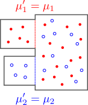

複数の物質が混合している系（＝多成分系）の、平衡条件を書き下したい。
複数成分の混合
題材として、水と窒素気体を用意する。1つの容器に仕切りを入れ、一方に水を、もう一方に窒素気体を入れる。その後、仕切りを外すと、水の一部は水蒸気になり窒素と混合する。また、窒素もがわずかだが水に溶ける。知りたいのは、この時の平衡状態である。窒素がなければ、前章と同じ状況である。水と窒素という二成分系の平衡条件がこの章での考察対象である。なお、窒素を持ち出したのはあくまで例であり、窒素特有の性質を使うわけではない
エントロピーの極大を考えれば平衡状態が決まる
今の場合も、平衡状態は「制約条件の下でのエントロピーの極大点」である。まず、制約条件は、以下の4つである：
𝐸liq+𝐸gas=const.∵エネルギー保存𝑉liq+𝑉gas=const.∵容器は変形しない𝑁liq1+𝑁gas1=const.∵水の分子数が一定𝑁liq2+𝑁gas2=const.∵窒素の分子数が一定⎫{
{
{⎬{
{
{⎭(1)
𝑁1
は水分子の数、
𝑁2
は窒素分子の数。この条件式の右辺の4個の定数が与えられたときに、左辺の8個の量を特定したいわけである。よって考えるべきなのは、エントロピーの極大条件から4個の条件を見つけることである。そうすれば、制約条件(1)の4式と連立することで、8個全ての未知数を特定できる。
平衡条件を書き下すところから始めよう
極大条件は前節と同様に書き下すことができる。ただし、系全体のエネルギー
𝐸
とエントロピー
𝑆
を、どうやって測定から求めるかについても考えておかないと実際の測定とつい合わせることができない。この章では、まず平衡条件を書き下し、その後、エネルギーやエントロピーの測定法について述べる。8.1多成分・多相系の平衡条件8.2エネルギー関数の測定8.3エントロピー関数の測定
8.1多成分・多相系の平衡条件
この節では、エネルギー関数
𝐸
とエントロピー関数
𝑆
がすでに分かっているとして、平衡条件(4)を書下す。（
𝐸,𝑆
を実験的に求める方法については、後の節で扱う。）
8.1.1平衡条件：式(4)
それではさっそく、平衡条件を書き下そう。まず、「制約条件(1)の下で総エントロピー
𝑆liq+𝑆gas
が極大になる」という平衡条件を、停留条件の形、即ち、微分形にする。これは簡単で、制約条件の微分：
𝛿𝐸liq+𝛿𝐸gas≐0𝛿𝑉liq+𝛿𝑉gas≐0𝛿𝑁liq1+𝛿𝑁gas1≐0𝛿𝑁liq2+𝛿𝑁gas2≐0
のもとで、総エントロピーの微分がゼロ：
𝛿𝑆liq+𝛿𝑆gas≐0(2)
となればよい。
エントロピーの微分 𝛿𝑆 を代入
また、各相のエントロピーは
𝐸,𝑉,𝑁1,𝑁2
の関数なので、その微分は
𝛿𝑆≐1𝑇(𝛿𝐸+𝑃𝛿𝑉−𝜇1𝛿𝑁1−𝜇2𝛿𝑁2)(3)
である。
𝜇1
を粒子1（今の場合、水または水蒸気）の化学ポテンシャルといい、
𝜇2
を粒子2（同、窒素）の化学ポテンシャルという。この式(3)を式(2)に代入した後、制約条件を使って、
liq
側の微小量を消すと、以下のようになる：（
[𝐴]gasliq≡𝐴gas−𝐴liq
）
0≐𝛿𝑆liq+𝛿𝑆gas≐[1𝑇]gasliq𝛿𝐸liq+[𝑃𝑇]gasliq𝛿𝑉liq−[𝜇1𝑇]gasliq𝛿𝑁liq2−[𝜇2𝑇]gasliq𝛿𝑁liq2
平衡条件：式(4)
最後の式の微小量は任意の値をとれることに着目すると、各微小量の係数は全てゼロになることが分かる。よって、以下が成り立つ：
𝑇liq=𝑇gas𝑃liq=𝑃gas𝜇liq1=𝜇gas1𝜇liq2=𝜇gas2⎫{
{
{⎬{
{
{⎭(4)
前章と同様に、温度・圧力・化学ポテンシャルが等しくなっている。ただし、2成分系であることを反映して、化学ポテンシャルの数が2つに増えている。この式と、制約条件(1)を連立すれば、未知数が全て特定できることになる。
補足等温または等温等圧の場合
ここまではエネルギー一定の条件を考えてきた。しかし、実験的にはむしろ、温度や圧力を制御するほうが容易であり、自然である。以下の【8.1-注1】および【8.1-注2】で述べるように、そのような場合でも、平衡条件(4)はそのまま使える。
【8.1-注1】補足等温環境での二相系の平衡条件
等温環境：
𝑇liq=𝑇gas≡𝑇(5)
の下での二相系の平衡状態は、（式(1), (4)から温度とエネルギーに関するものを除いた）以下の式で決まる：
𝑃liq=𝑃gas𝜇liq1=𝜇gas1𝜇liq2=𝜇gas2⎫{
{⎬{
{⎭𝑉liq+𝑉gas=const.𝑁liq1+𝑁gas1=const.𝑁liq2+𝑁gas2=const.⎫{
{⎬{
{⎭(6)
右式は制約条件である。これまで、
𝑃𝑝,𝜇𝑝1,𝜇𝑝2
（
𝑝=liq,gas
）は、
(𝐸𝑝,𝑉𝑝,𝑁𝑝1,𝑁𝑝2)
の関数と見なしていた。しかし、等温条件(5)が直接使えるように
(𝑇𝑝,𝑉𝑝,𝑁𝑝1,𝑁𝑝2)
の関数に変形しておいたほうが便利である。
導出
平衡条件(6)は直感的には自明だが、ここでは原理に立ち返って導出する。
等温環境は熱浴で実現できる
等温環境を実現するには、考えている容器に、温度
𝑇
の熱浴を接触させればよい。そうすれば平衡状態での容器の温度は
𝑇
になる。
平衡条件を書き下す
平衡条件(6)を導出するには、この熱浴を含めた系全体に対して平衡条件を考えればよい。熱浴を含めた場合の制約条件(1)に対応するのは
𝐸liq+𝐸gas+𝐸bath=const.𝑉liq+𝑉gas=const.𝑁liq1+𝑁gas1=const.𝑁liq2+𝑁gas2=const.⎫{
{
{⎬{
{
{⎭(7)
である。これと平衡条件
0≐𝛿𝑆liq+𝛿𝑆gas+𝛿𝑆bath
を用いて本文と同様の議論を行うことにより、平衡条件(4)に対応する式が得られる：
𝑇liq=𝑇gas=𝑇bath𝑃liq=𝑃gas𝜇liq1=𝜇gas1𝜇liq2=𝜇gas2⎫{
{
{⎬{
{
{⎭(8)
追加された項
𝐸bath,𝑇bath
は、それぞれ熱浴のエネルギーおよび温度。これらの式(7), 式(8)を連立して解けばよい。
𝐸bath を除去
まず、
𝐸bath
は未知数なので、式(7)の第1式を取り除きたい。その場合、式(7), 式(8)に残る条件式の数は8本となる。一方、未知数は、各相
𝑝
の
(𝐸𝑝,𝑉𝑝,𝑁𝑝1,𝑁𝑝2)
の合わせて8個であり数が一致している（
𝑝=liq,gas
）。よって、取り除いてよい。
𝑇bath を除去
熱浴の熱容量は非常に大きいので、エネルギー
𝐸bath
が多少変化したところで
𝑇bath
はほぼ一定値
𝑇
となる。この
𝑇
は実験者が設定する温度である。よって、平衡条件(8)の第1式は、未知数を決めるための条件というよりは、実験の前提条件(5)を与えることになる。以上により、残った式が式(6)となる。
◼
【8.1-注2】補足等温等圧環境での二相系の平衡条件
等温等圧環境：
𝑇liq=𝑇gas≡𝑇𝑃liq=𝑃gas≡𝑃}(9)
の下での二相系の平衡状態は、以下の式で平衡状態が決まる：
𝜇liq1=𝜇gas1𝜇liq2=𝜇gas2}𝑁liq1+𝑁gas1=const.𝑁liq2+𝑁gas2=const.}(10)
𝜇𝑝1,𝜇𝑝2
（
𝑝=liq,gas
）はそれぞれ、
(𝑇𝑝,𝑃𝑝,𝑁𝑝1,𝑁𝑝2)
の関数として表しておくと解きやすい。
導出
等温等圧環境を実現するには、熱浴に加えて、圧力浴（一定の圧力を加える装置、例えば、鉛直方向のピストンの上に重りを置いたもの）を追加すればよい。その上で、【8.1-注1】と同様の議論を行えば、式(7), (8)に対応する式：
𝐸liq+𝐸gas+𝐸bath=const.𝑉liq+𝑉gas+𝑉bath=const.𝑁liq1+𝑁gas1=const.𝑁liq2+𝑁gas2=const.⎫{
{
{⎬{
{
{⎭
および
𝑇liq=𝑇gas=𝑇bath𝑃liq=𝑃gas=𝑃bath𝜇liq1=𝜇gas1𝜇liq2=𝜇gas2⎫{
{
{⎬{
{
{⎭
から、式(9), (10)が得られる
◼
8.2エネルギー関数の測定
制約条件(1)にはエネルギーが含まれているので、エネルギー関数
𝑈𝑇𝑉𝑁1𝑁2
（＝平衡状態に対してそのエネルギーを与える関数）を求めておく必要がある。ここでは、その方法について述べる。等温系 → エネルギー関数は不要実際の実験は、等温環境で行うことが多い。その場合は、エネルギー関数は不要である。【8.1-注1】で述べたように、
𝑃,𝜇𝑖
を（エネルギーではなく）温度の関数として求めておけば平衡条件が解ける。
8.2.11成分系のエネルギー関数を求めておく
2成分の粒子が混合している場合を考えたいわけだが、まずは、どちらか1成分の場合に限定して考える。
これまでと同じ
1成分のみの場合、エネルギー関数を決定する方法は、これまでと同じである。即ち、熱容量関数と状態方程式を求めれば、エネルギー関数が決まる。複数の相が共存する系では、相ごとに粒子数が変化するので、モルエネルギー関数の形にしておくと扱いやすい。（モル）エネルギー関数の原点の任意性は成分ごとに生じるので、各成分ごとに適当に決めておく。
参考粒子種が変化する → エネルギーの任意性が減る
なお、化学反応などによって、粒子の種類が変化する場合は、エネルギー原点の任意性が減少する。例えば、成分1のみで構成されるエネルギー
𝑈1
の系に対して、
𝛥𝑈
のエネルギーを加えることですべて成分2に変化したとすると、成分2のエネルギー
𝑈2
は、エネルギー保存則により
𝑈2=𝑈1+𝛥𝑈
となる。これによって、
𝑈2
の原点の任意性はなくなる。この章で扱っている状況では粒子種は変化しないので、気にしなくてよい。これを考慮する必要があるのは、化学平衡のように、考えている実験の範囲内で粒子種の変化が起きる場合である。
8.2.2多成分系に拡張する
「1成分系のエネルギー関数」をもとに、「多成分系のエネルギー関数」を決めたい。そのためには、エネルギー変化を追跡しながら1成分系から多成分系に移行する方法が分かればよい。
混合はエネルギーを変えない
これは単純である。まず、仕切りを入れて2つの部屋に区切られた容器を用意する。一方の部屋には成分1のみを入れ、もう一方には成分2のみを入れる。その後、両者を隔てる仕切りに穴をあけて混合させればよい。この間、エネルギーの変化はないので、混合容器のエネルギー
𝑈
は、もとの2つの部屋のエネルギー、それぞれ
𝑈(1),𝑈(2)
の和になる：
𝑈𝑇𝑉𝑁1𝑁2=𝑈(1)𝑇1𝑉1𝑁1+𝑈(2)𝑇2𝑉2𝑁2(11)
𝑇,𝑉
はそれぞれ、混合後の温度と体積である。なお、右辺の各項
𝑈(𝑖)
は、モルエネルギー関数
¯𝑈(𝑖)
さえ求めておけば、任意の粒子数に対応できる：
𝑈(𝑖)𝑇𝑉𝑁=𝑁¯𝑈(𝑖)𝑇¯𝑉
𝑇,𝑉 に対する関数形を求める
式(11)によって、ある1点でのエネルギーの値
𝑈𝑇𝑉𝑁1𝑁2
が決まる。粒子数
𝑁1,𝑁2
を固定して、
𝑇,𝑉
を変えたときの関数形は、これまで通り、熱容量と状態方程式を測定することで確定する。相転移を起こす場合も、転移エネルギーを求めれば異なる相のエネルギー関数も決定できる。これによって、
𝑁1,𝑁2
をある値に固定した時のエネルギー関数
𝑈𝑇𝑉𝑁1𝑁2
が決まる。
様々な混合比率で繰り返す
あとはこれを、様々な
𝑁1,𝑁2
の比率で行うことで、任意の
𝑁1,𝑁2
比率でのエネルギー関数、即ち、完全な
𝑈𝑇𝑉𝑁1𝑁2
の関数形が決まる。よって結局、各成分だけが存在する系のモルエネルギーの原点を任意に固定してやれば、混合系の任意のエネルギー関数は、実験的に一意的に決まる。
8.3エントロピー関数の測定
多相系の平衡状態を平衡条件(4)から求めるには、各相のエントロピー関数
𝑆𝐸𝑉𝑁1𝑁2
を予め求めておく必要がある。これについても、平衡状態の測定からエントロピー関数を決めることができる。
平衡状態の測定 → エントロピー関数
実際、1つの相だけの系のエントロピー
𝑆𝐸𝑉𝑁1𝑁2
の微分(3)：（再掲）
𝛿𝑆≐1𝑇(𝛿𝐸+𝑃𝛿𝑉−𝜇1𝛿𝑁1−𝜇2𝛿𝑁2)(12)
が成り立つのだから、この右辺の全ての係数
𝑇,𝑃,𝜇1,𝜇2
を測定から求めれば、この微分方程式を積分することで
𝑆𝐸𝑉𝑁1𝑁2
の関数形が決まる。よって、これらの係数の値を、任意の平衡状態において測定する方法が分かればよい。
「化学ポテンシャル計」を作りたい
まず、
𝑇,𝑃
については問題ないだろう。それぞれ、温度計と圧力計を使って測定できる。では同様に、
𝜇1,𝜇2
を測定するための「化学ポテンシャル計」を作ることはできるだろうか。この節では、半透膜を使ってそのような化学ポテンシャル計が（原理的には）作れることを紹介する。半透膜半透膜とは、特定の成分の粒子のみを通過させ、それ以外の粒子は通過させないような膜である。
8.3.1半透膜を用いたエントロピーの測定
半透膜を用いたエントロピー測定の原理は単純である。
半透膜を用いた化学ポテンシャル測定の原理

右図のように、測定したい容器（右側）を用意し、そこに、1成分のみを通す半透膜で仕切った1成分容器（左側）を連結すればよい。左上の容器の半透膜は赤色の粒子
∙
のみを通し、左下の半透膜は青色の粒子
∘
のみを通す。この時、各成分の化学ポテンシャルは、平衡条件により、半透膜をまたいでも等しくなる。即ち、粒子
∙
の化学ポテンシャル
𝜇1
は1成分容器のものと等しくなる。よって、左側の1成分容器の化学ポテンシャルが既知であれば、右側の混合容器の化学ポテンシャル
𝜇1
を知ることができる。粒子
∘
についても同様であり、
𝜇2
が決まる。温度計とのアナロジー温度計とは、「自身の任意の平衡状態に対して温度が既知である小さな容器」のことである。これを、測定対象の容器Aに接触させると、両者の温度が一致するので、Aの温度を間接的に知ることができるわけである。化学ポテンシャル計についても同様である。即ち、化学ポテンシャル計とは「化学ポテンシャルの関数形が既知である小さな容器」のことであり、これを対象容器Aと半透膜を通じて接触させることで、Aの化学ポテンシャルが間接的に得られる。
エントロピーが決まる
1成分系であれば、化学ポテンシャルは、熱容量関数と状態方程式から容易に求めることができる。よって、半透膜があれば、多成分系の化学ポテンシャルの測定は容易である。そうすれば後は、式(12)を積分することで、複合系のエントロピー関数
𝑆𝐸𝑉𝑁1𝑁2
が決まる。あるいは、以下の【8.4-注1】のオイラーの関係式を使ってもエントロピーが決まる（エネルギー関数は求まっているとする）。
ただし、半透膜が常に用意できるかは不明
このように、半透膜を使えば、任意の数の成分を持つ系で化学ポテンシャルを測定できる。ただし、これはあくまで原理的な話である。実用上は、そのような半透膜が実際に存在するかは自明ではないという問題がある。任意の成分に対して存在することが原理的に保証されているのか？ 存在したとしてどのように作ればよいのか？ という点について熱力学では答えられない。
【8.3-注1】オイラーの関係式
一様な
𝑛
成分系の場合、エントロピー
𝑆
と化学ポテンシャル
𝜇𝑖
の間には以下の関係式が成り立つ：
𝑆=1𝑇(𝐸+𝑃𝑉−𝑛∑𝑖=1𝜇𝑖𝑁𝑖)(13)
これを、オイラーの関係式という。よって、右辺の量が求まれば、エントロピー
𝑆
の絶対値が決まる。なお、1成分系の場合は、第6章の【6.1-注2】の化学ポテンシャルの式に一致する。
導出
エントロピー
𝑆
は、
(𝐸,𝑉,𝑁𝑖)
の関数である：
𝑆𝐸𝑉𝑁𝑖
。見やすさのため、粒子数
𝑁1,𝑁2,…,𝑁𝑛
を、
𝑁𝑖
で代表している。いま、一様な系を考えているので、系全体を
𝜆
倍したエントロピー
𝑆𝜆𝐸𝜆𝑉𝜆𝑁𝑖
は、もとのエントロピーの
𝜆
倍である：
𝑆𝜆𝐸𝜆𝑉𝜆𝑁𝑖=𝜆𝑆𝐸𝑉𝑁𝑖(14)
オイラーの同次関数定理が使える
式(14)は、以下のオイラーの同次関数定理【8.4-注2】の式(15)が使える形になっている。よって同式により
𝑆=𝜕𝑆𝜕𝐸𝐸+𝜕𝑆𝜕𝑉𝑉+𝑛∑𝑖=1𝜕𝑆𝜕𝑁𝑖𝑁𝑖
となる。あとは、右辺の各々の偏微分係数を式(12)から読み取って代入すれば、式(13)に一致する。
◼
【8.3-注2】オイラーの同次関数定理（1次の場合）
ある関数
𝐹𝑿
が、変数
𝑿=(𝑋1,𝑋2,…)
に対する同次1次関数であるとする。この時、
𝐹𝑿
は以下を満たす：
𝐹=(∇𝐹)T𝑿(15)
同次1次関数ある関数
𝐹𝑿
が、任意の数
𝜆
に対して以下（＝引数の
𝜆
倍と関数の
𝜆
倍が等しい）が成り立つとする：
𝐹𝜆𝑿=𝜆𝐹𝑿(16)
この時、
𝐹𝑿
を同次1次関数という。要するに、この定理は、式(16)を満たす関数
𝐹
は、定数項を持たない1次関数になる：
𝐹=𝑎1𝑋1+𝑎2𝑋2+⋯
という当たり前のことを言っているだけである。
導出
定義式(16)の両辺それぞれを
𝜆
で微分すると、左辺側に連鎖律を用いて
𝑑𝑑𝜆(左辺)=𝑑𝐹𝜆𝑿𝑑𝜆𝑿𝑑𝜆𝑿𝑑𝜆=𝑑𝐹𝜆𝑿𝑑𝜆𝑿𝑿≡(∇𝐹)T𝜆𝑿𝑿𝑑𝑑𝜆(右辺)=𝐹𝑿
となる。
𝜆
は任意なので、この式で、
𝜆=1
とおくと式(15)に一致する。
◼